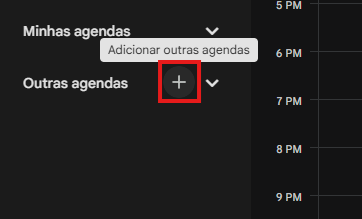
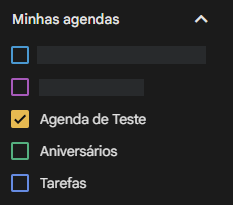
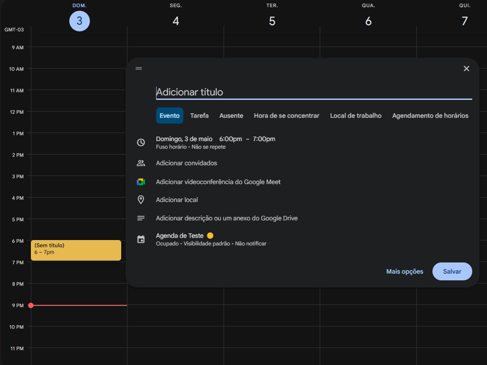
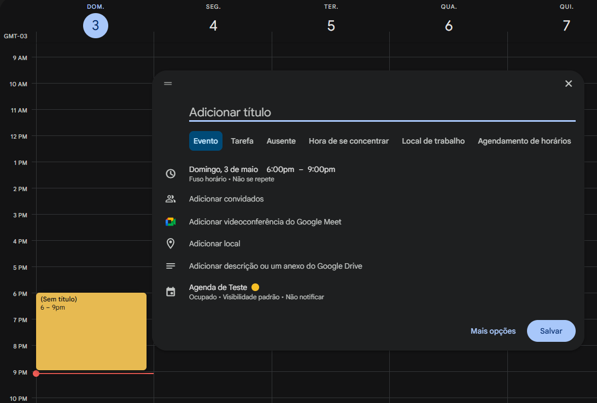
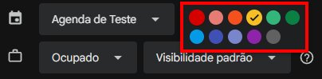
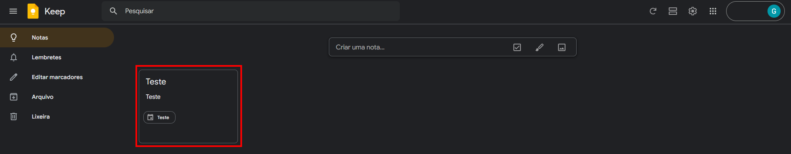

Sobre este guia
Este material foi criado para ajudar qualquer pessoa a dar os primeiros passos com ferramentas digitais de organização. O objetivo é mostrar, passo a passo e com imagens, como usar cada ferramenta de forma simples, sem complicação.
Cada seção traz instruções claras com capturas de tela para facilitar o acompanhamento. Você pode ler na ordem ou ir direto para a parte que precisar.
1. Google Agenda
1. Configurações Iniciais
Ao criar uma conta no Google, você obtém acesso a diversas ferramentas gratuítas. Para este guia, utilizaremos o Google Calendar (ou Google Agenda). O processo é semelhante em navegadores como Chrome, Firefox ou Edge, mas utilizaremos o Google Chrome como base.
Se você ainda não tem uma conta, acesse google.com e clique em "Fazer login" no canto superior direito. Selecione "Criar conta" e siga as instruções. Com o login feito, acesse calendar.google.com.

No canto inferior esquerdo, na seção "Minhas agendas", você verá uma agenda padrão com o seu nome. Caso queira criar uma agenda nova para separar seus compromissos (por exemplo, uma agenda para atividades pessoais e outra para atividades da escola), clique no símbolo "+" em "Outras agendas".


Você será redirecionado para uma tela de configuração. Preencha o nome da agenda e, se quiser, uma descrição. Confira se o fuso horário (o horário da sua região - para o Brasil, deve aparecer "America/Sao_Paulo") está correto e clique em "Criar agenda".

Ao retornar à tela principal, sua nova agenda aparecerá na lista. Para ativá-la e ver seus compromissos, certifique-se de que o quadrado ao lado do nome dela está marcado. Se ela sumir da tela por acidente, basta clicar no nome dela na lista para reativá-la.

2. Criação de Novas Atividades
Para criar uma atividade, você pode simplesmente clicar em qualquer faixa de horário no dia desejado.

Outra opção é clicar e arrastar o cursor para definir um intervalo de tempo maior logo de início. Em ambos os casos, você pode clicar em "Mais opções" para configure detalhes importantes.


Nesta tela, lembre-se de工夫 configurar os pontos essenciais:
- Título: Dê um nome claro à sua atividade.
- Horário e Repetição: Defina quando ocorre e se o evento se repete.
- Notificações: Escolha como quer ser lembrado.
- Agenda: Verifique se salvou na agenda correta (ex: "Agenda de Teste").
2.1 Entendendo Horários e Repetições
Os campos de data e hora são totalmente editáveis.

Embora o Google sugira intervalos de 15 minutos, você pode digitar manualmente o horário que desejar.
- AM: Horários entre 00h00 e 11h59 (manhã).
- PM: Horários entre 12h00 e 23h59 (tarde e noite).

Se a atividade durar o dia todo, marque a opção "Dia inteiro". Para atividades que acontecem rotineiramente, clique em "Não se repete" para ver as opções de repetição ou selecione "Personalizar" para configurar do seu jeito.


Na tela de personalização, você define os dias da semana e quando a repetição deve parar: em uma data específica ou após um número de ocorrências.

2.2 Configurando Notificações e Estilo
Para não esquecer seus compromissos, utilize o botão "Adicionar notificação". Você pode adicionar vários lembretes e escolher entre notificações no navegador ou no celular, ou por e-mail.


Você também pode atribuir cores às atividades para organizá-las visualmente. Após finalizar, clique em "Salvar".

3. Navegação e Modos de Visualização
Você pode alterar a forma como enxerga sua agenda para facilitar o planejamento. No canto superior direito, clique em "Semana" para abrir outras opções, como "Dia", "Mês" ou "Programação".

4. Integração com o Google Keep
O keep.google.com funciona como um bloco de notas integrado. Você pode acessá-lo diretamente pelo ícone lateral direito no Calendar.

Para vincular uma nota a uma atividade, primeiro clique no evento na sua agenda e depois no ícone do Keep para criar a nota. A nota ficará vinculada automaticamente àquele compromisso específico.

Dentro do Keep, você ainda pode adicionar caixas de seleção para transformar suas notas em listas de tarefas práticas.



Resumindo o que vimos no Google Calendar
Ao longo deste guia, você aprendeu as principais funções do Google Calendar: como criar e ativar agendas, adicionar compromissos com horário, data e repetição, configurar lembretes para não esquecer nada e usar o Google Keep para fazer anotações vinculadas aos seus eventos.
Se tiver dúvida em algum passo, você pode voltar a qualquer parte deste guia e seguir as instruções de novo. Cada etapa foi pensada para ser feita no seu tempo.
2. ClickUp
Esta seção está em preparação. Em breve, você vai encontrar aqui um guia em vídeo sobre como usar o ClickUp para organizar tarefas e acompanhar projetos.
3. Notion
Esta seção está em preparação. Em breve, você vai encontrar aqui um guia em vídeo sobre como usar o Notion para organizar variadas notas e estudar.